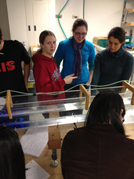
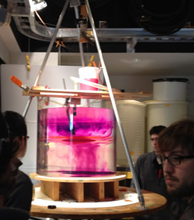
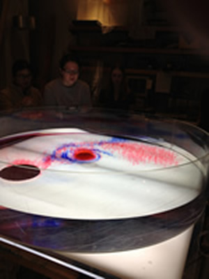

Course Description
This class is intended for first year graduate students in Atmospheric Science, Physical Oceanography, Applied Math, and related fields. It covers the basic physics of large-scale fluid flow on the Earth, focusing on how stratification and rotation affect important fluid mechanical phenomena. Lectures will be given on the three regular class days. We will also arrange another 1 hour meeting during the week for informal problem and reading discussions, and several lab activities.
Catalog descirption: Dynamics of rotating stratified fluid flow in the atmosphere/ocean and laboratory analogues. Equations of state, compressibility, Boussinesq approximation. Geostrophic balance, Rossby number. Poincare, Kelvin, Rossby waves, geostrophic adjustment. Ekman layers. Continuously stratified dynamics: Inertia-gravity waves, potential vorticity, quasigeostrophy. Prerequisite: ATM S/AMATH 505/OCEAN 511. |

Eowyn says "It went thataway!" |
Syllabus
1. Planetary Fluids at Rest
- [W 1/4] What is GFD? Scales and some questions (pdf) Vallis 1.1-1.4
- [F 1/6] Pressure, hydrostatic balance, the buoyancy frequency (pdf)
- [M 1/9] Properties of air and water, compressibility, potential temperature and density (pdf)
2. Planetary Fluids in Motion
- [W 1/11] The horizontal pressure gradient (pdf)
- LAB: pressure gradients and acceleration
- [F 1/13] Review of mass and momentum conservation (pdf) Holton 1.6
- [M 1/16] HOLIDAY
- [W 1/16] SNOW DAY
- [F 1/20] SNOW DAY
- [M 1/23] Momentum in a rotating frame of reference. Coriolis force. The geopotential. (pdf) Vallis 2.1 & 2.2.1, KC 4.12, Gill 4.5
- [W 1/25] Scale analysis, the hydrostatic approximation. The Boussinesq approximation. (pdf)
- LAB: Homogenous Rotating Fluid (during the 4th hour)
- [F 1/27] Equations for stratified, rotating, incompressible flow on a sphere. The f-plane. (pdf)
- [M 1/30] The beta-plane, Rossby Number, geostrophic balance, & the thermal wind. (pdf)
3. Shallow Water Waves with Rotation, Potential Vorticity
- [W 2/1] Derivation of the Shallow Water Equations (SWE). (pdf) Vallis 3.1-3.6
- [W 2/1] Rotating linear SWE on an f-plane: Poincare waves. (pdf) Vallis 3.7
- [F 2/3] More in Poincare waves: phase & group velocity, Inertial Oscillations. (pdf)
- [M 2/6] Potential Vorticity(PV) for the linear SWE. The Rossby adjustment problem. (pdf) Vallis 3.8
- [W 2/8] Effects of horizontal boundaries: Kelvin waves and tides. (pdf)
- [W 2/8] SWE PV conservation with topography: Taylor columns. (pdf)
4. Internal Waves
- [F 2/10] Two-layer Shallow Water Equations. (pdf)
- [M 2/13] Two-layer internal waves. (pdf)
- [W 2/15] Energy: KE & APE (Boussineq) (pdf)
- LAB: Three-layer rotating adjustment, and 1-layer SWE flow over topography
- [F 2/17] Hayley: Continuous stratification: linear internal inertia-gravity waves (IGW) (pdf)
- [M 2/20] HOLIDAY
- [W 2/22] NO CLASS: Ocean Sciences Meeting
- [F 2/24] NO CLASS: Ocean Sciences Meeting
- [M 2/27] IGWs continued (pdf)
- [W 2/29] IGWs and flow over topography (pdf)
- H5 Handed out: due 3/7, Solutions
- LAB: Internal waves: continuous stratification, non-rotating, also Homogenous "Spin-up"
|

Zack and Max and the 3-layer rotating adjustment experiment. |
5. Rossby Waves & Frictional Effects
- [F 3/2] Quasigeostrophic scaling (pdf)
- [M 3/5] Rossby waves on a beta-plane (pdf)
- [W 3/7] Reynolds averaging and the Ekman layer (pdf)
- [W 3/7] Ekman pumping and spin-down
- [F 3/9] Summary
Resources

Natalia contemplates the marvel of a cyclone caused by SWE flow over a bump on the large rotating table. |
|
Grading
Homework (60%), Midterm Exam (15%) Take-home, open book and notes, Final Exam (25%) Take-home, open book and notes.
Textbooks
- Atmospheric and Oceanic Fluid Dynamics (2006) Geoffrey K. Vallis. Available from Cambridge University Press as hardbound or from a variety of other places, including as a PDF.
- Holton, J. R. (1992) An Introduction to Dynami Meteorology. Academic Press, 507 pp.
- Gill, A. E. (1982) Atmosphere-Ocean Dynamics. Academic Press, 662 pp.
- KC: Kundu, P. K., and I. M. Cohen (2002) Fluid Mechanics. Academic Press, 730 pp.